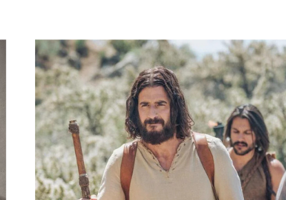

…and out of that abundance, he decided to make a film — about his hero.

A man who had spent his last years writing about a single painting.


filmmaker
Greg Whiteley.
Mitt. Last Chance U. Cheer. Chef’s Table. One of the most sought-after documentary filmmakers in the country.
He asked me to help him make this one.
selected filmography


Two friends, three years into a fifteen-year film — and neither of them knew it yet.


Friendship was always the through-line. The film was the long way home.


He painted mercy because he needed mercy.
c.30 ADJesus
1669Rembrandt
1992Nouwen
2011Greg & John
TONIGHTTHIS ROOM

Jesustells the story.
Rembrandtpaints it.
Nouwenwrites about the painting.
Gregstarts a film about Nouwen.
TONIGHTJohn discovers he is the story.
— and perhaps, so are you. —